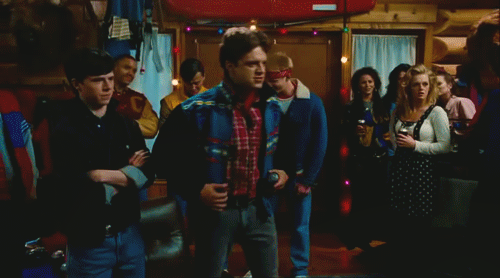
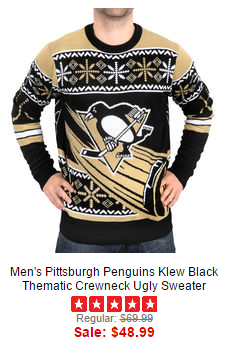
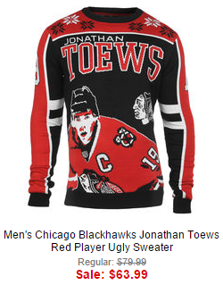
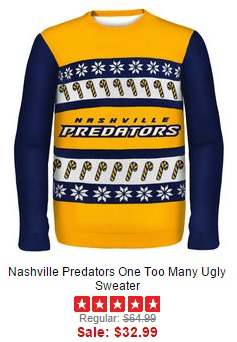
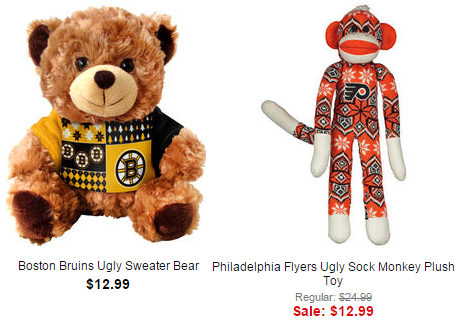
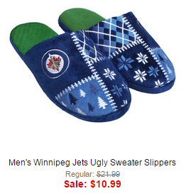

Let’s be honest. It’s time to retire the “ugly Christmas sweater” idea. The universe knows it, Santa knows it. My retinas certainly know it. But how can we be absolutely sure it’s time to kick a trend to the curb?
The NHL has fully adopted it.

Two-star rating? Keep it at full price.
Whew. That’s what the hangover feels like after you’ve been roofied at a party in the Hot Tub Time Machine.

Here, hold my quilted parka.
They had some ugly sweaters last season, but now there are 202 options. Once the NHL gets hold of something, you know it’s a) well past cool and b) never going away. The ugly NHL holiday sweater is your new Nickelback, and Bettman is not sorry.
Since they’ll be dusting these off annually until Ryan Nugent Hopkins looks at least 25 (so, 40 years for now), let’s see how the doomed (that’s us) will fare.
This Rangers sweater is too ugly even for the Rangers. It’s the belligerent flag of whatever America Donald Trump is trying to create. Is he the reviewer who gave it 5 stars? Who bought so many that it’s one of the few holiday sweaters NOT on sale?

Now with enhanced action puck
Black and yellow… snow. That’s the color of this yarn – faded pee. I bet it’s custom dyed, the NHL is so committed to making fetch this happen. On the bright side, if you’re buying a gift for the Penguins fan you want out of your life, it’s on sale!

It’s like he signed your chest.
Sweet sassy molassy. Did Toews approve this? Or did his contract allow the NHL to put his image on “urinal cakes or Christmas sweaters, but not both”, and he’d been hopefully searching for his face in every bar bathroom in Chicago? I hope they make this in exxxxxxtra-small for his dog. (That would be retail price, obviously: $79.99.)
The Blues sweater takes the 1980’s throwback look seriously – as seriously as a low-res tube TV with the color balance turned off. I can hardly see this thing, even while squinting, at yet its impenetrable color palette does nothing to lessen the overall horror. It’s like a really, really depressed R2D2, painted by Picasso.
Of course, there’s also such a thing as too bright:

Sharp cheddar
FEW LEFT! But why? The orange color was recalled to alleviate a worldwide shortage of road cones? They ran out of the radioactive dye injected into bloodstreams to find heart problems? All I know is, I’m never eating carrots again.
What if you got this Bruins Bergy facesweater for Christmas:
Is it so horrible that you’d buy this to wear over it?
I’d say yes, but I’m pretty sure if you stare at that vest long enough, a 3D image of Bergy’s face leaps out and bites you. Just think: layers warm enough for a Boston winter, and just $113.98! Order yours today!
Please note Bergy’s facesweater is $8 more than Toews’ facesweater, which is the same price as Crosby’s. I bet this is how the NHL will conduct 2016 All-Star voting.

SHOUTY CAPS
This. This looks less like an NHL Ugly Lightning Sweater and more like something you’d buy in China, wherein all the pieces are known images and letters, but their combination makes no sense.

Smells like team spirit
Apparently lightning bolts were too non-denominational, and had to be replaced by reindeer. But panthers (that look like elephants) and coyotes (that, in knit, look like the poop emoji), are acceptable representations of Christmas spirit.

Why does the Florida one need to say Florida?
Not hurricanes, though. They get reindeered. Man, what do extreme weather phenomena have to do to make the nice list?

Intern Jeff’s office attire
Notice the NHL replaced the Predator with candy canes…

Official hockey team of IKEA
Presumably because the real Predator eats reindeer, and also opposes the NHL expansion to its home planet of Yautja Prime.
It’s not just trends the NHL gets right every time. They always seem to have great women’s gear too! [sarcasm font] Check out these gems:

“Eyelash” style, because it feels like you have one in your eye.
They’re not out of focus, they’re fuzzy! Because the NHL loves us and wants us to be single forever die alone be warm and cozy! Which is why they’ve reduced the price from $80 to $40, for something I’d use to wax my car.

A really sharp eyelash.
And ugly sweaters are not just for humans. Oh no! The NHL wants to ensure that bears and monkeys have no friends…

Society for the Prevention of Ugly Sweaters to Animals
And they figure you might as well look frightening in the morning, since you woke up alone anyway.

You may be lonely, but at least you’ll be warm.
There are many more teams and options available at shop.NHL.com. In fact, two more items were added overnight, since I began this post. Someone is counting page clicks in single digits, riotously adding ugly sweater gear because someone – ANYONE! – has been browsing there.

Er, I actually like these.
Of course, if you’ve bought, gifted or received one of these items, you have gotten everything right. They are supposed to be ugly! This post is merely a testament to their success. And the NHL will keep them in fashion long after your favorite player leaves the team for which you bought a jersey with his name on it.
May you have many holiday occasions on which to wear your Ugly NHL Sweater, filled with cheer. Just watch the booze, because these patterns could take you from tipsy to trashed in the blink of a squinted eye. You’ll end up slurring drunken hockey nonsense to anyone in shouting distance.
Which has never, ever happened to us.

I love hybrid icing! It’s like tag for slow people who are cheaters!
Finally, next year we suggest the NHL have a big marketing meeting to discuss how to continue selling nothing, ever, to anyone. Perhaps a brilliant, fresh idea will spring to mind. “Keep Calm and Crosby On,” anyone?

I hate that phrase far more than any sweater.


![Twobeardedladies.wordpress.com [Pants note: STOP. Their subtitle is "If you're gonna play in Texas, you gotta have a beard on your face"!! I swear I did NOT see that before titling this post. #soulmates]](http://wuys.wpengine.com/wp-content/uploads/2015/09/day-4-scrimmage-BC-2BL-500x511.jpg)